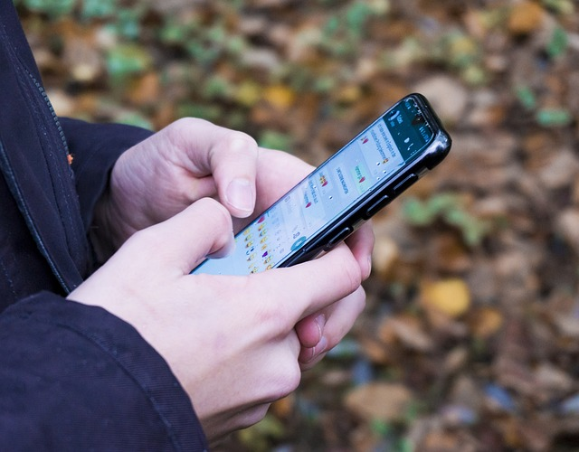
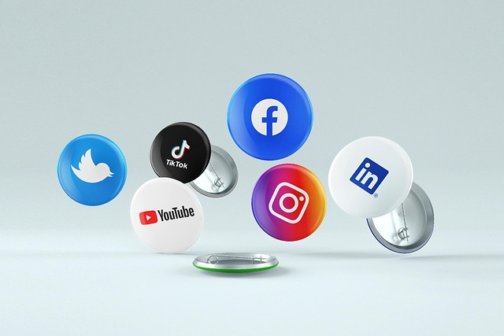

Aprendendo a usar o celular
WhatsApp é um aplicativo de mensagens instantâneas gratuito que permite enviar textos, áudios, fotos, vídeos, documentos e localização, além de realizar chamadas de voz e vídeo, usando a internet. Ele foi fundado em 2009 e adquirido pelo Facebook (Meta) em 2014, tornando-se uma ferramenta essencial para a comunicação pessoal e profissional em todo o mundo. Comunicação: Permite enviar mensagens instantâneas para indivíduos ou grupos. Mídia: Compartilhamento de fotos, vídeos, áudios e documentos. Chamadas: Realização de chamadas de voz e vídeo pela internet. Compartilhamento de localização: Envio da localização em tempo real. História: Fundado por Jan Koum e Brian Acton em 2009, foi vendido para o Facebook (Meta) em 2014. Popularidade: Tornou-se um dos aplicativos de mensagens mais populares do mundo. Segurança: Utiliza criptografia de ponta a ponta para proteger as conversas.
Fator 2FA
2FA (autenticação de dois fatores) é uma camada extra de segurança que exige duas formas diferentes de verificação para acessar uma conta ou sistema, protegendo-o mesmo que sua senha seja comprometida. Exemplos comuns incluem o uso da senha (algo que você sabe) junto com um código enviado por SMS (algo que você tem) ou um token gerado por um aplicativo (algo que você tem). Como funciona Primeira camada: Geralmente, é a sua senha tradicional. Segunda camada: Após a senha, o sistema solicita uma segunda forma de autenticação para confirmar que a pessoa que está tentando fazer login é realmente você.
Redes Sociais
Redes sociais, no ambiente online, são sites e aplicativos que operam em níveis diversos — como profissional, de relacionamento, dentre outros — mas sempre permitindo o compartilhamento de informações entre pessoas e/ou empresas. Nesse sentido, quando falamos em rede social, primeiro vem à mente sites ou aplicativos como Facebook (Meta), TikTok, Twitter (X) e Instagram, todos muito utilizados atualmente.

Golpes
Um golpe é um esquema desonesto que usa fraude e manipulação psicológica para enganar pessoas e obter dinheiro, bens ou informações pessoais. Esses esquemas podem ser aplicados por meios físicos ou digitais, como por telefone, e-mail, redes sociais e sites falsos. Golpistas frequentemente fingem ser alguém de confiança (como um funcionário do banco ou um amigo) para induzir a vítima a fazer transferências ou fornecer dados sensíveis. Tipos comuns de golpes: Engenharia social: Manipulação psicológica para levar a vítima a divulgar informações ou realizar ações, como golpes do falso suporte técnico ou do falso familiar. E-commerce falso: Criação de sites de compras falsos que imitam marcas reais para vender produtos inexistentes ou de baixa qualidade, após o pagamento. Falsos investimentos: Promessas de retornos financeiros altos e rápidos para atrair vítimas a esquemas fraudulentos. Clonagem de aplicativos: Obtenção de acesso a contas de mensagens como o WhatsApp para pedir dinheiro aos contatos da vítima. Phishing: Uso de e-mails, mensagens de texto ou sites falsos para roubar dados pessoais e bancários.